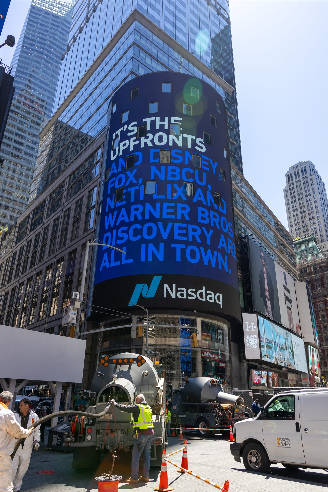

뉴욕 증시, '연준 충격' 하루 만에 극복…나스닥 2% 반등
전날 매파적 연방공개시장위원회(FOMC)에 흔들렸던 뉴욕 증시가 하루 만에 반등했다. 나스닥지수가 2% 가까이 오르며 투자심리가 빠르게 회복됐다. 미·이란 종전 합의에 따른 유가 하락이 안도감을 더했다.
양념자 기자 · 2026.06.19
橋국제

조선일보는 미국 증시가 전날의 연준발 충격을 하루 만에 털어내고 반등했으며, 기술주 중심의 나스닥이 약 2% 상승했다고 전했다. 매파적 점도표에 놀랐던 시장이 이내 실적과 금리 경로를 다시 저울질했다는 분석이다.
광고 문의 · 300×250충격에서 안도로
전날 FOMC가 연내 인상 가능성까지 열어두자 증시는 급락하고 국채 금리는 뛰었다. 그러나 하루 만에 분위기는 반전됐다. 미·이란이 종전 양해각서에 서명하고 유가가 내리면서, 물가와 긴축에 대한 공포가 누그러진 영향이 컸다.
기술주가 반등을 이끌었다. 고금리 부담이 큰 성장주일수록 금리·물가 기대에 민감한데, 유가 안정이 인플레이션 우려를 덜어주자 매수세가 돌아왔다. 다만 변동성은 당분간 이어질 수 있다.
한국 시장에 주는 신호
미국 기술주의 반등은 한국 증시의 투자심리에도 우호적이다. 같은 날 코스피가 9,000을 돌파한 흐름과 맞물려, 위험선호 회복이 국내외에서 동시에 나타났다. 다만 강달러와 금리 차라는 부담은 여전해, 환율 변동성에는 주의가 필요하다.
제3의 시각
華橋時報는 이 반등을 '공포의 빠른 소화'로 본다. 연준의 매파 신호는 그대로지만, 유가 하락이라는 새 변수가 물가 공포를 상쇄했다. 시장은 늘 가장 최근의 재료에 민감하게 반응하며, 그만큼 다음 재료에 따라 다시 출렁일 수 있다. 우리는 단기 등락보다 흐름의 방향을 함께 짚는다.
출처·참고 (사실 확인용 — 본문은 직접 재작성)
· 조선일보 2026.06.19 '하루 만에 연준 충격 극복한 뉴욕 증시…나스닥 2% 상승'
· 조선일보 2026.06.19 '하루 만에 연준 충격 극복한 뉴욕 증시…나스닥 2% 상승'